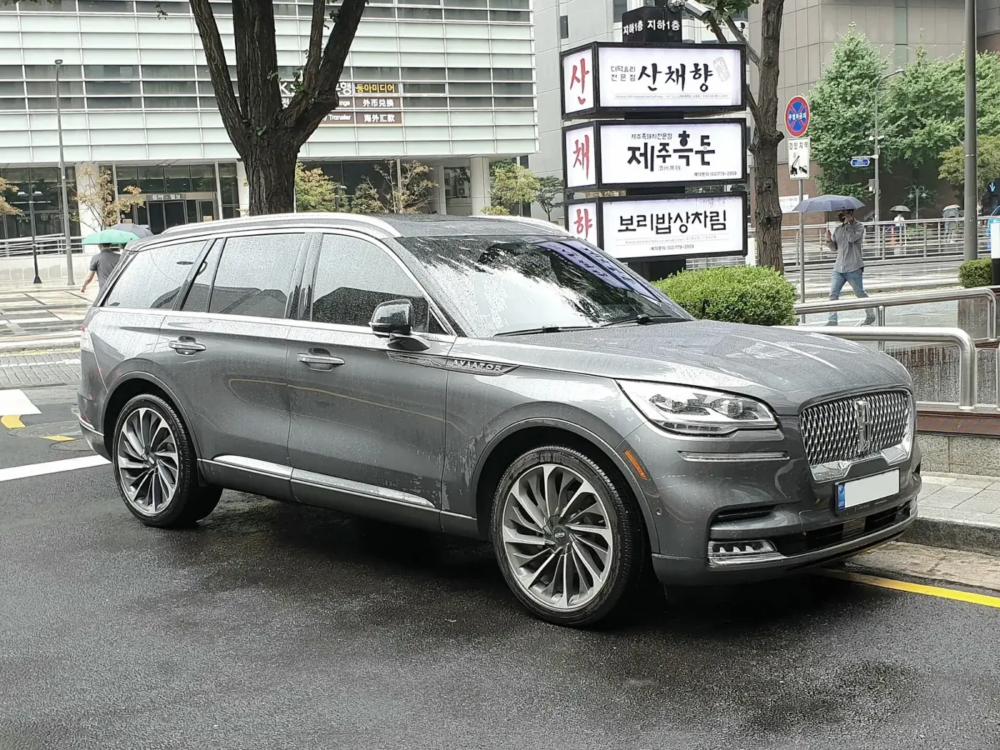
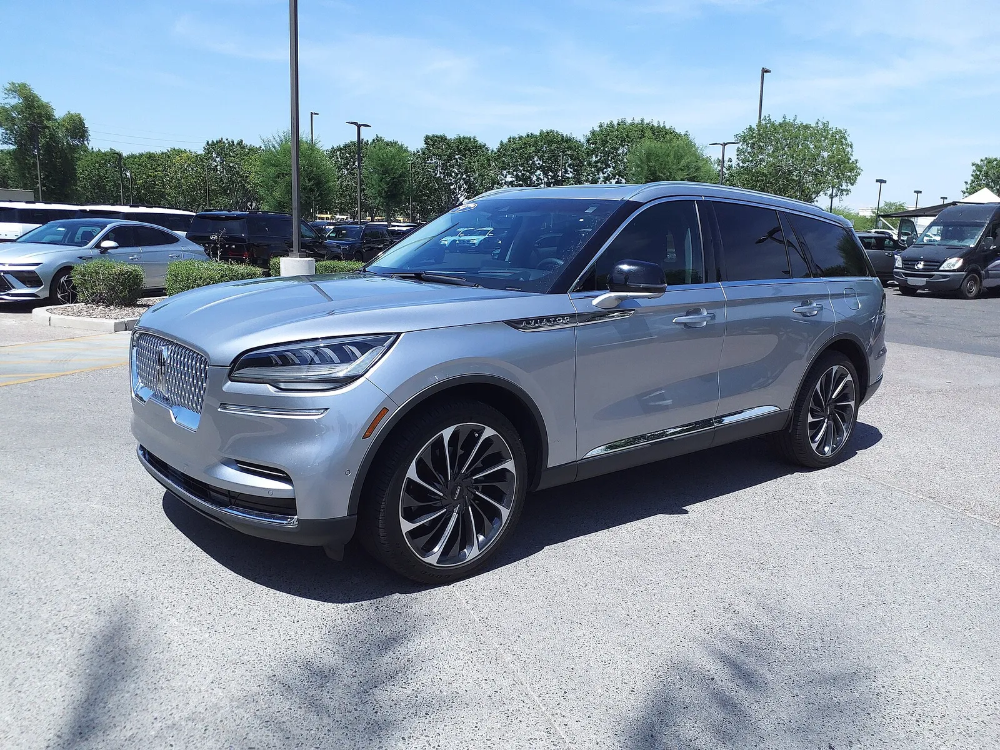
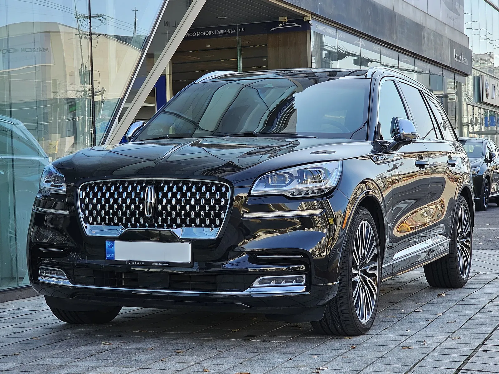
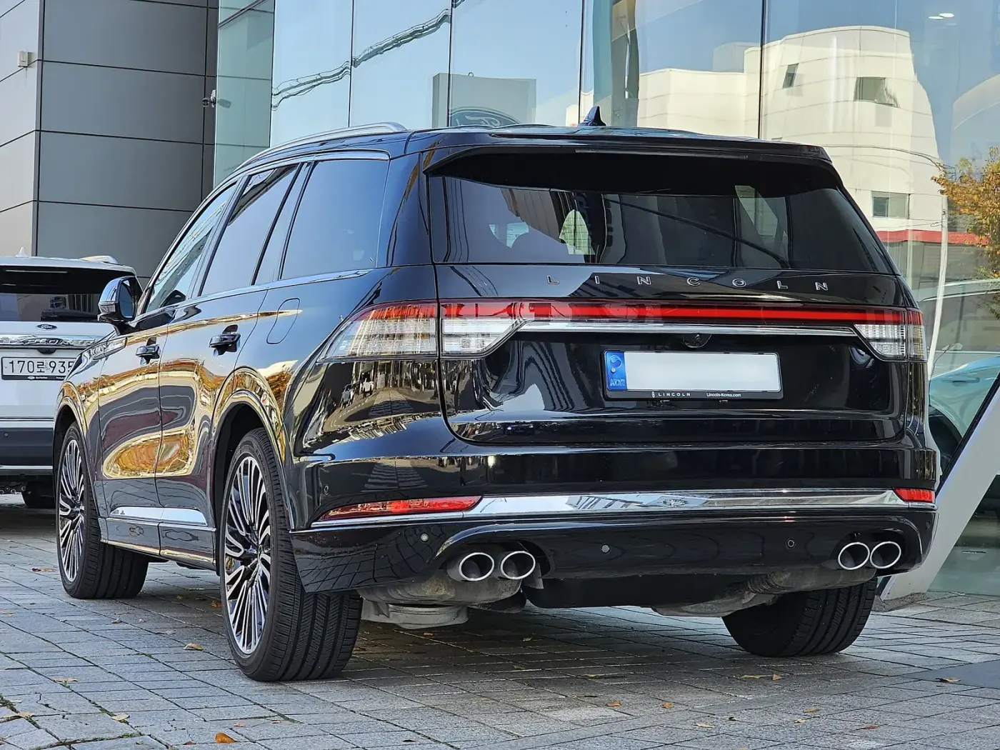
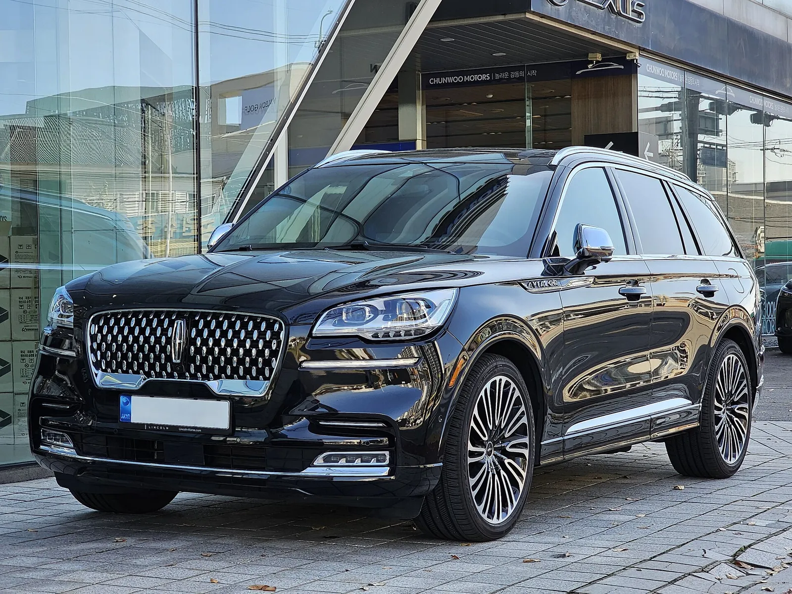
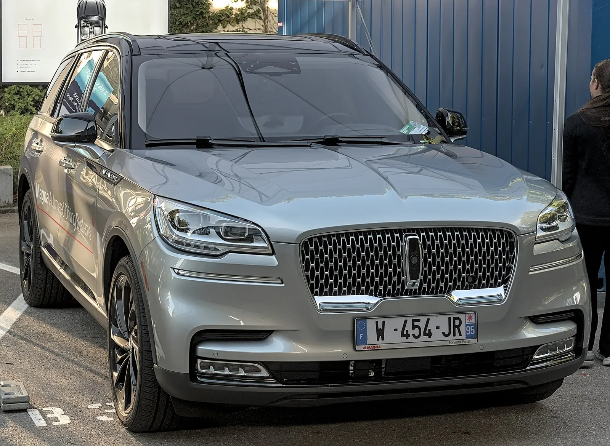
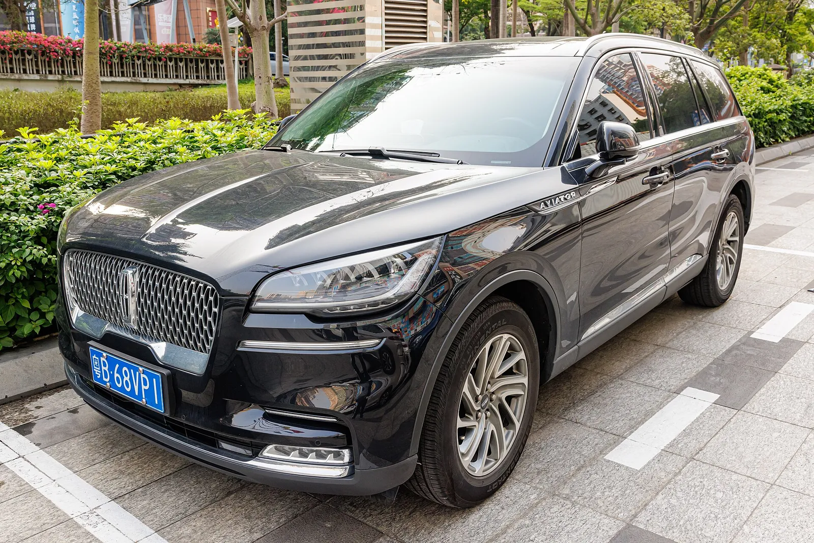
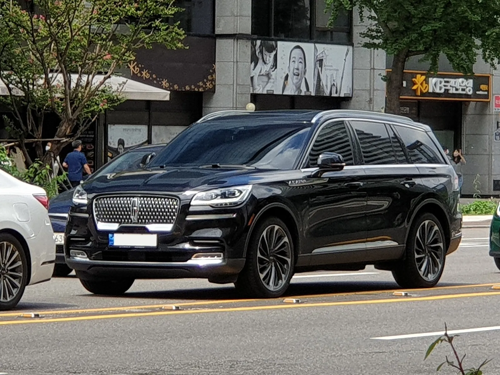
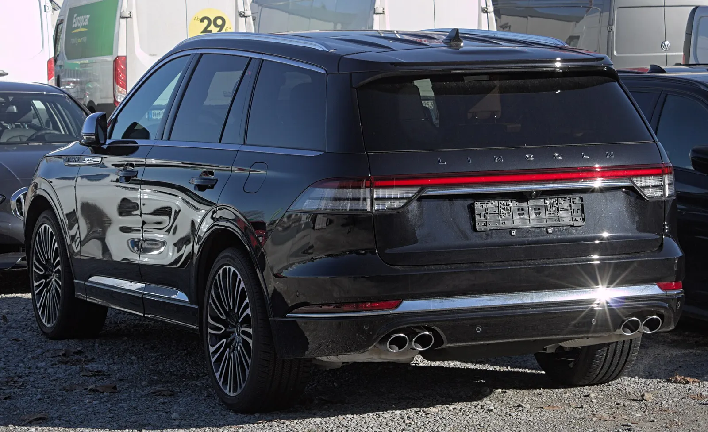

▲ 링컨 에비에이터 2세대(2020 Reserve AWD로 표기된 개체) 사진: MercurySable99 / Wikimedia Commons, CC BY-SA 4.0
"신차 때 8,000만~9,000만 원대였던 3열 SUV가 지금은 4,450만 원 안팎." 2026년 8월 20일 기준 엔카 매물 81대를 분석한 결과, 2021~2023년식 링컨 에비에이터의 호가 중앙값은 약 4,450만 원이었다. 중간 50% 호가는 3,940만~4,990만 원이다. 카프리즘은 이 수치를 국내 출시가와 대조해 감가율을 직접 계산하고, 같은 예산의 국산 신차와 나란히 놓았다.
중고 에비에이터의 시세 하락은 링컨 내비게이터 감가·에비에이터 가치 기사에서 다룬 미국 시세 이야기와 맞닿아 있지만, 이 글은 한국 중고 시장 호가와 국내 출시가만을 기준으로 한다. 신형 GV80 하이브리드의 가격 전망은 GV80 하이브리드 출고가 기사에서 따로 정리했다.
1. 시세의 출처와 전제 — 무엇을 확인했고 무엇을 못 했나
이번 시세는 위드뉴스(2026년 8월 23일 기사)가 엔카 매물 81대를 분석해 전한 수치다. 카프리즘이 엔카 사이트 원문을 직접 열어 81대를 다시 센 것은 아니다. 위드뉴스 기사에는 중간 50% 3,940만~4,990만 원, 전체 중앙값 약 4,450만 원이 담겼고, KB차차차 매물도 4천만 원대에 형성됐지만 실거래가가 아닌 광고가여서 조건별 편차가 크다는 설명이 붙었다. 호가는 딜러가 붙인 판매 희망가이며, 실제 거래가는 이보다 낮을 수 있다. 위드뉴스 원문 바로가기
| 항목 | 수치 | 비고 |
|---|---|---|
| 분석 대상 | 2021~2023년식 81대(엔카 등록 매물) | 분석 대상의 주행거리 범위는 원문에 명시되지 않음. 원문은 "3만~7만km 안팎에 정비 이력이 이어진 차량"을 고르라고 권고 |
| 중간 50% 호가 | 3,940만~4,990만 원 | 하위 25%~상위 25% 사이 |
| 전체 중앙값 | 약 4,450만 원 | 카프리즘 계산의 기준값 |
| 엔진·구동 | 3.0L 트윈터보 V6·AWD·3열 | 기사 서술 기준 |
| 함께 언급된 대안 | KB차차차 4천만 원대 매물 | 원문도 "실거래가가 아닌 광고가"라고 단서를 단 수치 |
또 하나의 전제는 "국내 판매가 계속되고 있는가"다. 확인 결과 링컨은 2020년 4월 21일 국내에서 올-뉴 에비에이터를 출시했고, 2024년 10월에는 부분변경 '더 뉴 에비에이터'(2025년형)가 8,990만~1억 600만 원 가격대로 이어졌다. 즉 판매 중단이나 철수가 아니라 현행 모델이 있는 상태에서 앞선 연식이 중고로 풀리는 구조다.

▲ 회색 에비에이터의 전면 3/4(Commons 설명은 "Grey Lincoln Aviator U611 SUV"이며 트림·연식은 확정하지 않음). 시세 분석 대상인 2세대 모델이다 사진: Damian B Oh / Wikimedia Commons, CC BY-SA 4.0
2. 감가 계산 — 출시가 대비 몇 %가 남았나
카프리즘은 엔카 호가 분포(하위 25%·중앙값·상위 25%)를 국내 출시가 두 개와 현행 가격 범위에 각각 나눠 잔존율을 계산했다. 2020년 4월 출시가는 리저브 8,320만 원, 블랙 라벨 9,320만 원(부가세 포함, 개소세 인하가 적용된 가격으로 보도)이다. 분석 대상이 2021~2023년식이어서 같은 연식의 정확한 출시가와는 약간 다를 수 있다. 이 점은 아래 한계에서 다시 설명한다.
| 기준 신차가 | 하위 25%(3,940) | 중앙값(4,450) | 상위 25%(4,990) |
|---|---|---|---|
| 리저브 출시가 8,320 | 잔존 47.4% · 감가 4,380 | 잔존 53.5% · 감가 3,870 | 잔존 60.0% · 감가 3,330 |
| 블랙 라벨 출시가 9,320 | 잔존 42.3% · 감가 5,380 | 잔존 47.7% · 감가 4,870 | 잔존 53.5% · 감가 4,330 |
| 참고: 2025년형 시작가 8,990 (현행 신차가 대비) | 잔존 43.8% · 감가 5,050 | 잔존 49.5% · 감가 4,540 | 잔존 55.5% · 감가 4,000 |
| 참고: 2025년형 최고가 10,600 (현행 신차가 대비) | 잔존 37.2% · 감가 6,660 | 잔존 42.0% · 감가 6,150 | 잔존 47.1% · 감가 5,610 |
📍 "8천만 원대 SUV가 4천만 원대"는 얼마나 정확한가
이 제목은 리저브 출시가 8,320만 원(블랙 라벨은 9,320만 원)과 중고 호가 중앙값 4,450만 원을 같은 기준으로 맞춘 표현이다. 현행 2025년형 최고가 1억 600만 원은 신차 시장의 가격이라 중고 중앙값과 직접 비교하지 않았다. 계산상 중앙값 기준으로 신차 출시가의 약 절반 안팎(47.7~53.5%)이 남은 셈이다. 다만 5년 안팎 지난 차의 감가율로서 이례적으로 크다고 단정할 근거는 확인하지 못했다.

▲ 전면 3/4에서 본 에비에이터(2022 Reserve로 표기된 개체) 사진: HJUdall / Wikimedia Commons, CC0
3. 트림·연식 — 시세 폭이 1,000만 원 넘게 벌어지는 이유
중간 50% 구간의 폭이 1,050만 원(3,940만~4,990만 원)이나 되는 이유는 연식, 트림, 주행거리, 파워트레인이 섞여 있어서다. 국내 출시 당시 구성은 다음과 같았다.
| 트림 | 출시 당시 가격 | 좌석·특징 |
|---|---|---|
| 리저브 | 8,320만 원(2020.4 출시가) · 2021년형은 8,370만~8,410만 원 보도 | 7인승 벤치 시트, 22인치 휠 |
| 블랙 라벨 | 9,320만 원(2020.4) · 2021년형은 9,360만~9,390만 원 보도 | 6인승 캡틴 시트 + 풀 센터콘솔 |
| 그랜드 투어링(PHEV) | 2021년형 9,850만~9,890만 원 보도 | 3.0 V6 + 전기모터 시스템 494마력, 전기 주행 약 30km(보도 기준) |
| 2022년형 제트 패키지 | 국내 가격은 2022년 상반기 발표 예정이라는 보도까지만 확인 | 블랙 외장 마감 패키지(그릴·범퍼·휠 등) |
2021년형 가격이 보도마다 다르다. 리저브는 8,370만 원(한 매체)과 8,410만 원(구매 가이드)으로, 블랙 라벨은 9,360만 원과 9,390만 원으로 나뉜다. 카프리즘은 확실히 확인한 2020년 4월 출시가(딜리언 기준)를 계산표의 기준으로 썼고 연식별 공식 가격표는 확인하지 못했다.
트림이 시세에 주는 영향도 중요하다. 같은 엔진이라도 블랙 라벨은 6인승, 리저브는 7인승이어서 3열 승차 인원이 달라진다. 또한 위드뉴스는 에어서스펜션이 전 트림 기본 사양이 아니라고 짚었다. 반면 신차 출시 보도에서는 출시 당시 에어서스펜션이 적용된 것으로 소개돼 서로 엇갈린다. 출시 당시 보도와 중고 시장 기준 시점이 달라 생긴 차이일 가능성이 있으나, 어느 쪽이 맞는지는 확인하지 못했다. 따라서 매물마다 차대번호나 옵션 표로 장착 여부를 직접 확인해야 한다.

▲ 블랙 라벨로 표기된 에비에이터의 전면 사진: Damian B Oh / Wikimedia Commons, CC BY-SA 4.0
4. 파워트레인과 연료비 — 3.0 트윈터보 V6의 값
가솔린 모델은 3.0L 트윈터보 V6(최고 405마력, 최대토크 57.7kg·m)에 10단 자동변속기와 AWD 조합이다. 국내 견적 사이트는 현행 모델의 복합연비를 7.7km/L(휠베이스 3,025mm)로 적고 있다. 이 연비는 2025년형 기준이고, 2021~2023년식의 공식 복합연비는 확인하지 못했다. PHEV인 그랜드 투어링은 고전압 배터리와 충전계통이 달라 별도 시세·유지비 계산이 필요하다는 점을 위드뉴스가 지적했다.
| 연 주행거리 | 휘발유 1,600원/L | 1,700원/L | 1,800원/L |
|---|---|---|---|
| 10,000km | 208 | 221 | 234 |
| 15,000km | 312 | 331 | 351 |
| 20,000km | 416 | 442 | 468 |
연료비 가정은 카프리즘이 임의로 둔 휘발유 가격이며 고급유 권장 여부는 확인하지 못했다. 연 15,000km를 7.7km/L로 달리면 약 1,948L가 필요하다.
자동차세는 배기량 2,956cc에 cc당 200원(1,600cc 초과)을 곱하면 본세 59만 1,200원이고, 지방교육세 30%를 더하면 연 76만 8,560원이다. 차령이 3년을 넘으면 해마다 5%씩 경감(최대 50%)되므로 연식에 따라 경감률이 다르다. 2021~2023년식은 경감률이 0~20% 범위일 것으로 보고 계산하면 연 약 61만~77만 원(경감 없음 76만 8,560원, 20% 경감 약 61만 5,000원)이다. 이는 카프리즘의 추정 범위이며 실제 고지서는 차량 등록 시점과 지자체 기준을 따른다.

▲ 후면에서 본 에비에이터. 가로로 이어진 테일램프가 특징이다(블랙 라벨로 표기된 개체) 사진: Damian B Oh / Wikimedia Commons, CC BY-SA 4.0
5. 3열 거주성 — 확인한 것과 확인 못 한 것
에비에이터는 3열 SUV이며 신차 출시 때 리저브는 7인승, 블랙 라벨은 6인승으로 소개됐다. 휠베이스는 3,025mm로 보도된다. 3열 레그룸이나 성인 탑승 실측값은 이번에 확인한 자료에 없어서 숫자로는 비교하지 못했다. 매물을 볼 때는 3열 승하차와 장거리 착석을 직접 확인해야 한다. 블랙 라벨의 6인승 구성은 2열이 독립 시트여서 2열 승차감에는 유리하지만, 7인 가족에게는 맞지 않는다.
구매 후보로 올릴 때 이 부분은 의외로 결정적이다. 7인 가족이면 리저브 계열(7인승)만 후보가 되고, 4인 가족이라면 블랙 라벨의 6인승이 오히려 장점일 수 있다. 같은 값이라도 좌석 구성이 용도와 맞지 않으면 선택지가 줄어든다.

▲ 측면 전면 방향에서 본 에비에이터(블랙 라벨로 표기된 개체) 사진: Damian B Oh / Wikimedia Commons, CC BY-SA 4.0
6. 같은 값대 국산과 비교 — 4,450만 원이면 무엇을 살 수 있나
중앙값 4,450만 원 근처의 국산 신차와 비교하면 위치가 보인다. 가격은 보도·견적 사이트·기아 공식 가격표 기준이며 개소세 적용 여부·트림·옵션에 따라 달라진다.
| 모델 | 가격 | 에비에이터 중앙값(4,450만) 대비 |
|---|---|---|
| 링컨 에비에이터 2021~2023년식(중고) | 중앙값 약 4,450만 원 | 기준 |
| 쏘렌토 하이브리드(신차, 기아 공식 가격표 2WD) | 세제혜택 적용 3,963만~4,795만 원(프레스티지~블랙 에디션), 적용 전 4,063만~4,895만 원. 4WD는 전자식 4WD 옵션 232만 원 추가 | 범위 안에 걸림(최저가보다 약 487만 원 높고 최고가보다 약 345만 원 낮음). 신차 보증 있음 |
| 팰리세이드 하이브리드 익스클루시브(신차) | 7인승 4,982만 원(세제혜택 반영가 기준) | 약 532만 원 높음 |
| 팰리세이드 하이브리드 캘리그래피(신차) | 7인승 6,186만 원 | 약 1,736만 원 높음 |
| 제네시스 GV80 2.5 터보(신차) | 약 6,790만~6,886만 원(개소세 기준에 따라 매체별 차이) | 약 2,340만~2,436만 원 높음 |
핵심은 두 가지다. 첫째, 같은 4천만 원대에서 에비에이터는 V6 405마력과 대형 SUV의 체격을 얻는 대신, 신차 보증과 연료비를 내줘야 한다. 둘째, 비슷한 크기의 3열 SUV를 신차로 사려면 팰리세이드 하이브리드 익스클루시브부터 약 5,000만 원이 든다. 연료비 격차까지 합치면 "중고 에비에이터가 싸다"는 단정은 어렵다. 이 판단은 카프리즘의 해석이다. 같은 3열 수입 SUV의 중고 사례로는 익스플로러 중고 시세 기사가 있다. 카프리즘이 같은 방식으로 계산한 2021~2023년식 익스플로러 호가 중앙값은 2,999만 원(출시가 대비 잔존율 약 49.8%)으로, 에비에이터 중앙값보다 약 1,451만 원 낮다(익스플로러는 2.3 가솔린 4WD 110대, 에비에이터는 3.0 AWD 81대 기준이라 같은 방식의 분석이라는 뜻이며 같은 차급 조건은 아니다). 쏘렌토·싼타페 하이브리드의 성격 차이는 쏘렌토 vs 싼타페 하이브리드 비교에서 볼 수 있다.

▲ Commons 파일 설명에 IAA 2025(2025년 9월 8일 촬영으로 표기)로 적힌 에비에이터. 트림·연식은 확정하지 않음 사진: Alexander Migl / Wikimedia Commons, CC BY-SA 4.0
7. 3년 보유 시나리오 — 연 감가와 고정비를 더하면 얼마인가
중고차는 사는 값보다 팔 때 얼마가 남느냐가 연간 비용을 좌우한다. 아래 표는 카프리즘이 가정한 시나리오다. 구입가는 호가 분포의 하위 25%·중앙값·상위 25%, 3년 뒤 재매각가는 구입가의 60%·70%·80%로 가정했고, 이 재매각률은 실제 시세 근거가 아니라 민감도를 보기 위한 임의 가정이다. 연 감가액은 구입가×(1−재매각률)÷3, 연료비는 연 15,000km·7.7km/L·휘발유 1,700원/L로 약 331만 원, 자동차세는 61만~77만 원이어서 고정비는 약 392만~408만 원이다. 보험료·정비·소모품은 확인하지 못해 제외했다.
| 구입가 | 재매각률 60% | 재매각률 70% | 재매각률 80% |
|---|---|---|---|
| 3,940만 원 | 감가 525 → 합계 918~933 | 감가 394 → 합계 786~802 | 감가 263 → 합계 655~671 |
| 4,450만 원 | 감가 593 → 합계 986~1,001 | 감가 445 → 합계 837~853 | 감가 297 → 합계 689~705 |
| 4,990만 원 | 감가 665 → 합계 1,058~1,073 | 감가 499 → 합계 891~907 | 감가 333 → 합계 725~741 |
같은 4,450만 원이라도 재매각률이 10%포인트 달라지면 연 감가액이 약 148만 원 차이 난다. 3년 뒤 얼마에 팔릴지는 연식·주행거리·사고 이력에 달려 있어 확인하지 못했고, 위 숫자는 반올림 오차 ±1만 원이 있으며 "어느 가정에서 연 약 650만~1,070만 원이 드는가"를 가늠하는 용도로만 써야 한다.

▲ 중국에서 촬영된 에비에이터 전면 3/4(Commons 파일 설명은 "LINCOLN AVIATOR (U611) China"이며 트림·연식은 확정하지 않음) 사진: Dinkun Chen / Wikimedia Commons, CC BY-SA 4.0
8. 구매 체크리스트 — 위드뉴스 지적에 카프리즘이 더한 것
✅ 중고 에비에이터 점검 7가지
· 에어서스펜션 — 차대번호·옵션 표로 장착 여부 확인, 주차 후 한쪽 차고가 내려앉는지 점검
· 엔진 — 냉간·열간 시동 상태를 모두 확인하고 하부에서 오일 누유·냉각수 흔적 검사
· 타이어·브레이크 — 21인치 이상 대형 부품은 교체비가 크므로 제조연월·편마모·휠 손상을 견적에 반영
· PHEV — 그랜드 투어링은 고전압 배터리·충전계통 이력 별도 확인
· 정비 기록 — 주행 3만~7만km 안팎에 정비 이력이 이어진 차량 위주로 선택
· 총소유비용 — 취득세·보험료·첫해 정비 예비금까지 구매가에 더해 비교
· 좌석 구성 — 6인승(블랙 라벨)과 7인승(리저브) 중 가족 구성에 맞는지 먼저 확인

▲ 도로에서 본 검은색 에비에이터(Commons 파일명에는 Reserve로 표기되며 연식은 확정하지 않음) 사진: Damian B Oh / Wikimedia Commons, CC BY-SA 4.0
부품·서비스망과 보험료는 이번에 1차 자료로 확인하지 못했다. 같은 급 수입 대형 SUV는 부품 수급과 공임이 국산보다 높은 경우가 많다는 것이 일반적인 인식이지만, 에비에이터에 대한 구체 비용은 확인하지 못했다. 서비스센터 수와 부품 대기 기간은 구매 전에 직접 문의해야 한다. 3열 수입 SUV를 놓고 비교한다면 익스플로러 중고 시세·구매 조건 기사도 함께 볼 만하다. 중고 SUV를 연비로 고르는 기준은 연비 20km/L 중고 SUV 기사에서, 중고차 전반의 인기 순위는 인기 중고차 TOP10 기사에서 볼 수 있다.
9. 이 분석의 한계 — 확인하지 못한 항목
| 항목 | 상태 |
|---|---|
| 엔카 원문 81대 직접 집계 | 확인하지 못함(위드뉴스 인용) |
| 분석 대상 81대의 주행거리 분포 | 원문에 명시 없음 |
| 2021·2022·2023년식별 공식 출시가 | 2020년 4월 출시가·2025년형 가격만 확인, 연식별은 보도 간 차이 |
| 2021~2023년식 공식 복합연비 | 확인하지 못함(7.7km/L는 현행 기준) |
| 3열 레그룸 실측 | 확인하지 못함 |
| 보험료·부품값·서비스망 비용 | 확인하지 못함 |
| 2022년형 제트 패키지 국내 가격 | 확인하지 못함 |
| 호가와 실거래가의 차이 | 확인하지 못함 |

▲ 후면 3/4에서 본 에비에이터(Commons 설명은 "Lincoln_Aviator_(U611) in Stuttgart-Vaihingen"이며 트림·연식은 확정하지 않음) 사진: Alexander Migl / Wikimedia Commons, CC BY-SA 4.0
10. 요약
2021~2023년식 에비에이터 호가는 중간 50%가 3,940만~4,990만 원, 중앙값은 약 4,450만 원이다. 2020년 출시가(리저브 8,320만·블랙 라벨 9,320만 원)와 비교하면 중앙값 기준 잔존율은 각각 53.5%·47.7%다.
같은 예산에서는 쏘렌토 하이브리드 2WD 신차(기아 공식 가격표 세제혜택 적용 3,963만~4,795만 원)와 겹치고, 팰리세이드 하이브리드 익스클루시브(4,982만 원)와 GV80(약 6,800만 원대)보다 낮다. 대신 7.7km/L 연비와 연 약 61만~77만 원의 자동차세, 보증 부재를 감수해야 한다. 3년 보유 가정 시나리오에서는 연료비·세금 포함 연 약 650만~1,070만 원이 든다.
시세의 출처는 위드뉴스가 인용한 엔카 분석이며, 호가와 실거래가는 다를 수 있다. 에어서스펜션 장착 여부와 PHEV 배터리 이력, 정비 기록을 확인하는 것이 시세 자체보다 중요하다.